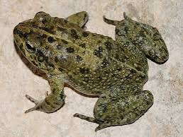

Habita qualquer área em que consiga encontrar as fontes de água necessárias para sua reprodução. Apresenta um corpo esverdeado com poucas rugas. Sua pele possui muitas manchas circulares pretas, além de uma linha discreta que vai da cabeça à cauda, semelhante ao sapo corredor
